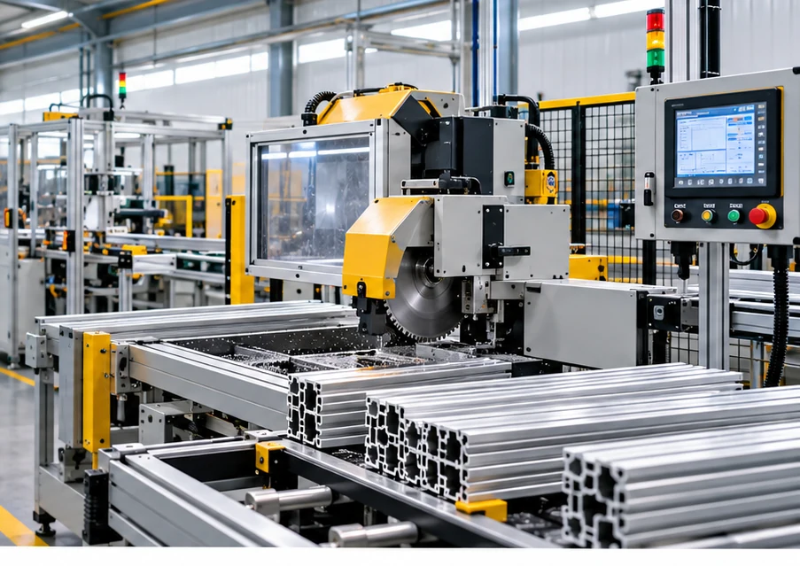

01↗
Assembly Automation
Manual, semi-automatic and automatic assembly machines, dedicated fixtures and station integration.
Discuss assembly needs ↗EXPERT IN AUTOMATION
Engineering practical automation solutions that help make manufacturing more consistent, traceable and productive.
Built around your process
From requirement review to installation support.

WHO WE ARE
SENAN Automation focuses on practical industrial automation that supports assembly consistency, process control and production efficiency. We coordinate mechanical systems, electrical controls, sensors and inspection requirements around your application.
See how we work ↗Solutions aligned to product, process and plant needs.
Mechanics, controls and sensing considered together.
From concept discussions through handover support.
WHAT WE DO
Configurable equipment and integration services to solve specific manufacturing challenges.
Manual, semi-automatic and automatic assembly machines, dedicated fixtures and station integration.
Discuss assembly needs ↗Leak and torque testing, press monitoring, functional checks and inspection stations.
Explore testing systems ↗Laser marking integration, code reading, Data Matrix verification and vision inspection.
Improve traceability ↗Conveyors, pallet handling, operator stations, machine interfaces and line upgrades.
Plan a line upgrade ↗PLC/HMI integration, sensors, pneumatics, safety interfaces and control-panel coordination.
Talk controls ↗Installation assistance, commissioning coordination, qualification support and retrofit activities.
Plan support ↗ENGINEERING & INTEGRATION
A clear, collaborative process keeps the application, interfaces and acceptance criteria in focus throughout the project.
Explore our approach ↗Understand process flow, cycle-time targets, product interfaces and acceptance criteria.
Develop station concepts, layouts, fixtures and an automation architecture.
Coordinate mechanisms, controls, sensors, feeders and inspection components as applicable.
Support trials, installation, commissioning, documentation and customer handover.
APPLICATION AREAS
Automation can be configured around the product, process and requirements of each plant.
Component assembly, pressing, fastening and functional testing.
Dedicated fixtures, controlled process steps and inspection-oriented workstations.
Repeatable handling, assembly and process verification.
Semi-automatic stations, operator-assist systems and productivity upgrades.
PROJECT DELIVERY
Project-specific schedules and acceptance criteria are agreed during scope finalization.
Requirements, sample parts, process flow and interfaces.
Scope, concept, deliverables and commercial proposal.
Layout, mechanical design and controls plan.
Build, assembly, programming and internal trials.
Installation, commissioning, training and handover.
BUILT INTO THE PROCESS
Process quality
Defined operating sequences, inspection checkpoints and repeatable fixture interfaces.
Machine safety
Risk review, guarding and interlocks as applicable, with safe access in mind.
Project documentation
Scope, layouts, manuals, test records and handover documents as agreed.
LET'S BUILD BETTER PROCESSES
Share your product details, process requirements, target cycle time and acceptance criteria. We’ll use them to start a focused conversation.
Plot No. 20, New Bangalore Colony, TVS to Kothur Road, Kothur Village, Kothakondapalli Post, Hosur – 635 109, India